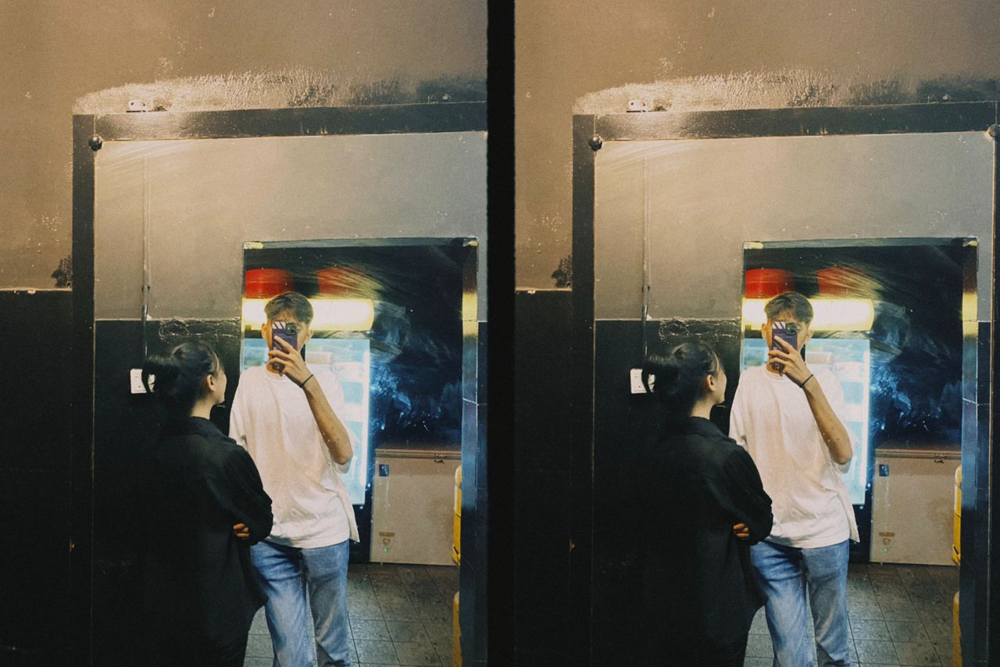

My name is Mohamad Irfan bin Ismail. I am currently 17 years old and is a student at SMK St. Joseph. My height is around 178cm and weight around 65kg. I'd like to describe myself as the type ofperson who is kind and care about people and my surrounding. Im a very good driver eventhough I don't have my lisence yet but personally, people trust me enough to drive them around.
I have a lot of likes and dislikes. I love spending time with people im close with , although sometimes I'm tired, I would make time for people especially my +1. I hates it when people not being on time or even leave me hanging. I love to yap around my friends and family and even force them to listened to me yapping all day. Overall, I don't have that much friends cause I'd like to keep my circle small and just hangout with the people I love and people who appreciates my existence
